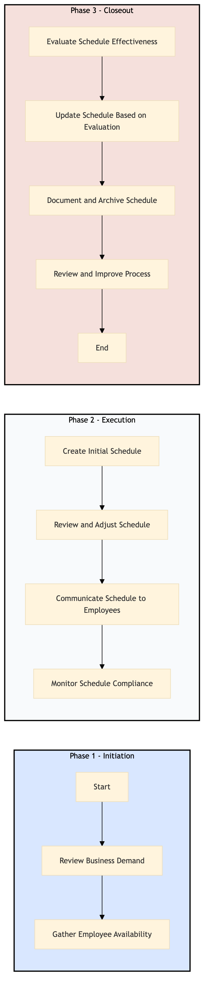

| Role | Steps |
|---|---|
| Hotel General Manager | 1.1 2.2 3.1 3.4 |
| Human Resources Manager | 1.2 2.3 3.2 3.3 |
| Workforce Scheduler | 2.1 2.4 |
| Department Heads | 2.3 2.4 |
| Step | Name | Role | System | Input | Output | KPI | Dec? | Exc? | Pain Point / Risk |
|---|---|---|---|---|---|---|---|---|---|
| 1.1 | Review Business Demand | Hotel General Manager | Oracle OPERA Cloud | Business demand report from Oracle OPERA Cloud | Updated business demand analysis document | Less than 30 minutes | Y | N | Inaccurate business demand forecasts leading to over or under staffing |
| 1.2 | Gather Employee Availability | Human Resources Manager | Oracle OPERA Cloud, Book4Time | Employee availability data from Oracle OPERA Cloud and Book4Time | Compiled employee availability report | Less than 1 hour | N | Y | Missing or incomplete employee availability information |
| 2.1 | Create Initial Schedule | Workforce Scheduler | Oracle OPERA Cloud, IDeaS G3 RMS | Business demand analysis and employee availability report | Initial workforce schedule draft | Less than 2 hours | Y | N | Balancing business needs with employee preferences |
| 2.2 | Review and Adjust Schedule | Hotel General Manager, Human Resources Manager | Oracle OPERA Cloud | Initial workforce schedule draft | Finalized workforce schedule | Less than 1 hour | Y | N | Ensuring compliance with labor laws and union agreements |
| 2.3 | Communicate Schedule to Employees | Human Resources Manager, Department Heads | Oracle OPERA Cloud, Book4Time | Finalized workforce schedule | Employee communication plan and confirmation of receipt | Less than 30 minutes per department | N | Y | Low employee response rates or dissatisfaction with the schedule |
| 2.4 | Monitor Schedule Compliance | Workforce Scheduler, Department Heads | Oracle OPERA Cloud | Employee time tracking data from Oracle OPERA Cloud | Compliance report and adjustments if necessary | Daily review within 1 hour | Y | N | Handling last-minute schedule changes due to unforeseen circumstances |
| 3.1 | Evaluate Schedule Effectiveness | Hotel General Manager, Human Resources Manager | Oracle OPERA Cloud, Microsoft Power BI | Operational performance data from Oracle OPERA Cloud and Microsoft Power BI | Schedule effectiveness evaluation report | Less than 1 hour | Y | N | Identifying areas for improvement in scheduling processes |
| 3.2 | Update Schedule Based on Evaluation | Workforce Scheduler, Human Resources Manager | Oracle OPERA Cloud | Schedule effectiveness evaluation report | Updated workforce schedule for the next period | Less than 2 hours | Y | N | Implementing changes without disrupting current operations |
| 3.3 | Document and Archive Schedule | Human Resources Manager, Workforce Scheduler | Oracle OPERA Cloud | Finalized workforce schedule for the period | Archived schedule document | Less than 30 minutes | N | Y | Ensuring all historical data is securely stored |
| 3.4 | Review and Improve Process | Hotel General Manager, Human Resources Manager | Oracle OPERA Cloud, Microsoft Power BI | Schedule effectiveness evaluation report | Process improvement plan | Less than 1 hour | Y | N | Continuous process optimization without compromising quality |
HR-TL-03 outlines the process for workforce scheduling and rostering at a Marriott full-service hotel. This ensures efficient staff deployment across various departments to meet operational needs.